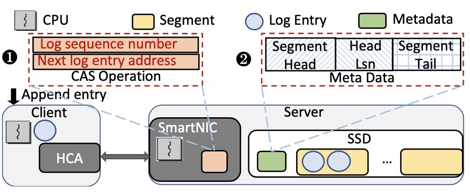

Pei Chen
I am a senior engineer in Huawei Cloud Computing Technology Ltd, Beijing. I am working on improving metadata performance of file and object storage systems in cloud computing.
Prior to industry, I earned my MPhil in Computer Science from Tsinghua University(THU) in 2022, co-advised by Professor Jiwu Shu and Professor Youyou Lu in Storage Research Group.
Previously, I obtained my B.S. in Computer Science at Central South University(CSU), advised by Professor Weiping Wang.
GitHub Twitter Linkedin chenp732 AT gmail.com
Research Interest
I work in the area of System for Cloud Computing and database systems. My research spans distributed systems, and storage systems on emerging hardware (e.g., Non-Volatile Memory, RDMA).
In particular, I am interested in building distributed systems, key-value stores and transactional systems leveraging emerging devices (e.g., RDMA, SmartNICs). Moreover, I am also passionate about hardware memory disaggregation, enabling independent scaling of memory and compute.
What's
New
[Jan 2022] I earned my MPhil in Computer Science from Tsinghua University(THU).
[Jun 2018] I obtained my B.S. in Computer Science at Central South University(CSU).
Research
Experience
Below are my research experience and industry projects.
-

SNlog: A SmartNIC-driven shared log
Preprint.
Pei Chen, Youyou Lu, Qing Wang, Junru Li, Jiwu Shu. What: A disaggregated shared log system that offloads log operations to emerging SmartNICs.
Benefits: Better throughput compared to existing log systems, without consuming significant computational resources on the server side. and fully utilizing the bandwidth of raw SSD devices.
How: Leverage the ARM-based Mellanox BlueField-2 SmartNIC, direct read and write operations to flash storage devices are performed. Propose techniques include delayed persistence log management, efficient concurrency control mechanisms and a replica protocol separates metadata and data. A two-level mapping mechanism enhances log read performance and addresses the limited memory challenge of SmartNICs. RDMA is utilized for data transmission, minimizing message copying. -

Efficient and Consistent NVMM Cache for SSD-based File Syst
TC 2018.
Youmin Chen, Youyou Lu, Pei Chen, Jiwu Shu. Task: Graph classification.
What: An invariant learning algorithm for GNNs.
Motivation: GNNs mostly fail to generalize to OOD datasets and provide interpretations.
Insight: We construct interventional distributions as "multiple eyes" to discover the features that make the label invarian (i.e., causal features).
Benefits: Intrinsic interpretable GNNs that are robust and generalizable to OOD datasets. -

Let Invariant Rationale Discovery Inspire Graph Contrastive Learning
ICML 2022.
Sihang Li, Xiang Wang, An Zhang, Ying-Xin Wu, Xiangnan He and Tat-Seng Chua Task: Graph classification.
What: A graph contrastive learning (GCL) method with model interpretations.
How: We generate rationale-aware graphs for contrastive learning to achieve better transferability. -

Knowledge-Aware Meta-learning for Low-Resource Text Classification
EMNLP (Oral) 2021. Short Paper.
Huaxiu Yao, Ying-Xin Wu, Maruan Al-Shedivat, Eric P. Xing. Task: Text classification.
What: A meta-learning algorithm for low-resource text classification problem.
How: We extract sentence-specific subgraphs from a knowledge graph for training.
Benefits: Better generalization between meta-training and meta-testing tasks.
-
SNlog: A SmartNIC-driven shared log
Preprint.
Pei Chen, Youyou Lu, Qing Wang, Junru Li, Jiwu Shu. What: A disaggregated shared log system that offloads log operations to emerging SmartNICs.
Benefits: Better throughput compared to existing log systems, without consuming significant computational resources on the server side. and fully utilizing the bandwidth of raw SSD devices.
How: Leverage the ARM-based Mellanox BlueField-2 SmartNIC, direct read and write operations to flash storage devices are performed. Propose techniques include delayed persistence log management, efficient concurrency control mechanisms and a replica protocol separates metadata and data. A two-level mapping mechanism enhances log read performance and addresses the limited memory challenge of SmartNICs. RDMA is utilized for data transmission, minimizing message copying. -
SNlog: A SmartNIC-driven shared log
Preprint.
Pei Chen, Youyou Lu, Qing Wang, Junru Li, Jiwu Shu. What: A disaggregated shared log system that offloads log operations to emerging SmartNICs.
Benefits: Better throughput compared to existing log systems, without consuming significant computational resources on the server side. and fully utilizing the bandwidth of raw SSD devices.
How: Leverage the ARM-based Mellanox BlueField-2 SmartNIC, direct read and write operations to flash storage devices are performed. Propose techniques include delayed persistence log management, efficient concurrency control mechanisms and a replica protocol separates metadata and data. A two-level mapping mechanism enhances log read performance and addresses the limited memory challenge of SmartNICs. RDMA is utilized for data transmission, minimizing message copying. -
SNlog: A SmartNIC-driven shared log
Preprint.
Pei Chen, Youyou Lu, Qing Wang, Junru Li, Jiwu Shu. What: A disaggregated shared log system that offloads log operations to emerging SmartNICs.
Benefits: Better throughput compared to existing log systems, without consuming significant computational resources on the server side. and fully utilizing the bandwidth of raw SSD devices.
How: Leverage the ARM-based Mellanox BlueField-2 SmartNIC, direct read and write operations to flash storage devices are performed. Propose techniques include delayed persistence log management, efficient concurrency control mechanisms and a replica protocol separates metadata and data. A two-level mapping mechanism enhances log read performance and addresses the limited memory challenge of SmartNICs. RDMA is utilized for data transmission, minimizing message copying. -
SNlog: A SmartNIC-driven shared log
Preprint.
Pei Chen, Youyou Lu, Qing Wang, Junru Li, Jiwu Shu. What: A disaggregated shared log system that offloads log operations to emerging SmartNICs.
Benefits: Better throughput compared to existing log systems, without consuming significant computational resources on the server side. and fully utilizing the bandwidth of raw SSD devices.
How: Leverage the ARM-based Mellanox BlueField-2 SmartNIC, direct read and write operations to flash storage devices are performed. Propose techniques include delayed persistence log management, efficient concurrency control mechanisms and a replica protocol separates metadata and data. A two-level mapping mechanism enhances log read performance and addresses the limited memory challenge of SmartNICs. RDMA is utilized for data transmission, minimizing message copying.
Education
Experience
By reserved by time order
Tsinghua University
2018.09 - 2022.01 Advisor: Prof. Jiwu Shu & Prof. Youyou LuI had great experience working with Prof. Jiwu Shu, and Prof. Youyou Lu. This experience strengthens my problem-solving and communication skills and broadens my research horizons.
Central South University
2014.09-2018.07 Advisor: Prof. Weiping WangI am lucky to follow Weiping who encourage me to go for professional competence.
Services
[2022 - 2023] Lecturer, Tsinghua University Student Career Development Association Student Tutor Group.
[2021 - present] Member, Morning Jogging Team of Central South University.
[2021 - 2023] Member, Bodybuilding Team of Tsinghua University.
[2021] Guest speaker, Tsinghua University Computer Science Department "Future of Computing" Phd and Master's Forum.
Awards
🏆[2018] Outstanding Undergraduate Thesis Award(Top 2%)(TODO:加个pdf链接) of CSU.
🏆[2018] Outstanding Graduate(Top 0.1%) of Hunan Province & CSU.
🏆[2017] Second-class Scholarship(Top 5%) of CSU.
🏆[2017] Excellent Student(Top 1%) CSU.
🏆[2016] National Scholarship(Top 0.2% Nationwide), China.
🏆[2016] First-class Scholarship(Top 1%) of CSU.
🏆[2016] Qu Yuan Scholarship(Top 0.1%) of CSU.
🏆[2016] Excellent Student Cadre(Top 2%) CSU.
🏆[2016] Honorable Mention of the International Mathematical Contest in Modeling(MCM).
🏆[2016] Second Prize of University Students' Energy Conservation and Emission Reduction Competition of China(Top 5% Nationwide).
🏆[2016] Second Prize of Information Security Competition of CSU.
🏆[2016] Third Prize of Programming Competition of CSU.
🏆[2016] First Prize of Transportation Science and Technology Competition of CSU.
🏆[2016] First Prize of Energy Saving and Emission Reduction Competition of CSU.
🏆[2015] National Encouragement Scholarship(Top 5%), China.
🏆[2015] Second-class Scholarship(Top 5%) of CSU.
🏆[2015] Chang Wei Scholarship(Top 1%) of CSU.
🏆[2015] Excellent Student Cadre(Top 2%) CSU.
🏆[2015] Third Prize of the Chinese Mathematical Contest in Modeling(MCM).
Miscellaneous
I like running long distances.
I am learning to ski.